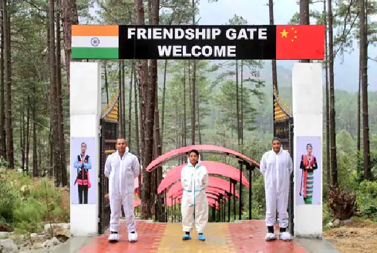
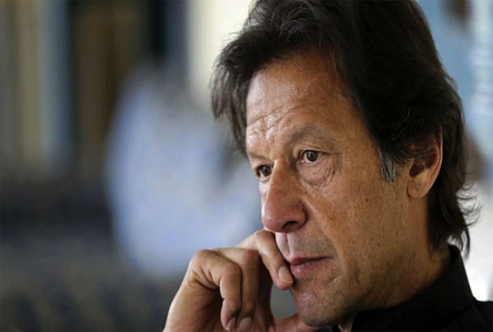
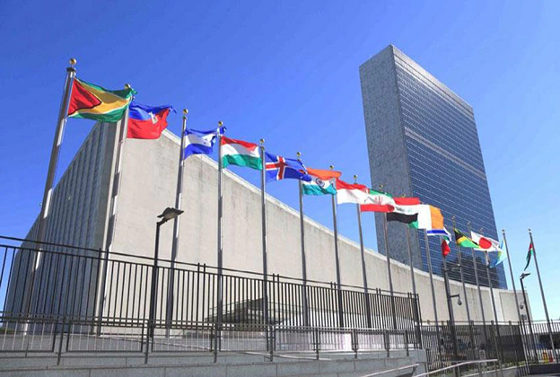
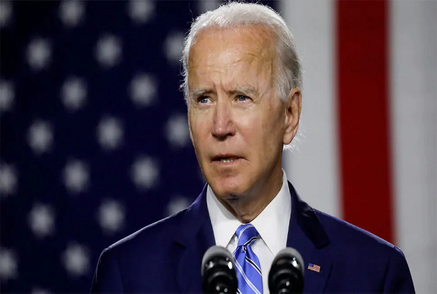
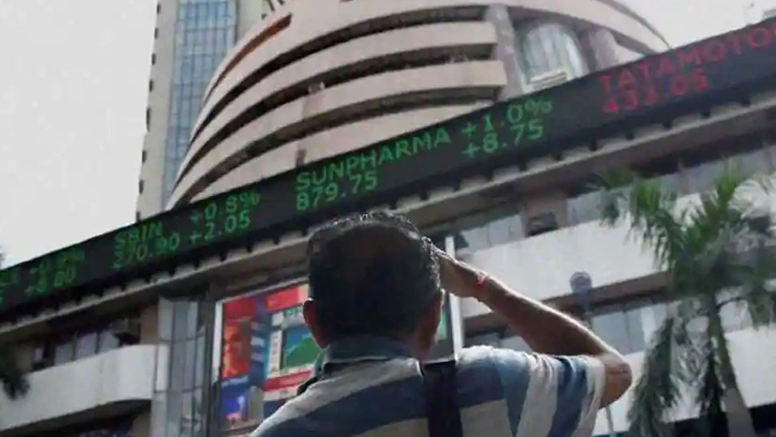

CURRENT-AFFAIRS FEB 1, 2022
1. Conflict over Ukraine in UN: America's allegation – peace in danger because of Russia; Counterattack of Russian Diplomat - spreading false fear

Tensions between Russia and America regarding Ukraine are not taking the name of reduction. Diplomats of both the countries clashed during the voting on Ukraine issue in the United Nations Security Council (UNSC) on Monday. On behalf of the US, it is alleged that Russia is endangering the peace of the region by gathering troops on the Ukraine border. At the same time, the Russian Diplomat retaliated, accusing America of spreading false fear.
Amidst all these accusations, US President Joe Biden also warned Russia in a threatening tone in the United Nations Security Council. Biden said- If Russia is ready to address our security concerns through dialogue, then only America and its allies will move forward in this direction. Instead, Russia will face dire consequences if it attacks Ukraine.
India distances itself from voting
India took the middle path by not participating in this voting. India has very good relations with both Russia and America, if it took the side of either, it would have a negative effect on mutual relations. India chose to stay away from this matter in view of its own interest.
US Ambassador Linda Thomas-Greenfield at the UNSC meeting said – The situation we are facing in Europe is dangerous. Russia's military build-up on Ukraine's borders shows an aggressive pattern. If the Russians attacked Ukraine, none of us would be able to say we didn't know about it in advance. At the same time, Russian Diplomat Vasily Nebenzia called America a country inciting conflict. He said that America wants war. While Russia had no plans to attack Ukraine.
Nebenzia said – Russia wants peace in the region, but America and its allies are trying to weaken Russia on the country. They are creating unnecessary tension between Russia and Ukraine. The Security Council meeting was adjourned after two hours without any action. After Nebenzia left, the US diplomat said that the Russians did not give us the answers we expected.
Diplomats of Russia and Ukraine will meet in Berlin
Let us tell you that there has been a ceasefire between Russia and Ukraine after an 8-hour meeting in Paris last week. These two countries are going to meet again in Berlin soon. Tensions between the two countries have continued since Russia annexed Ukraine's Crimea in 2014. Last year, Putin had deployed 1.50 lakh soldiers on the Ukraine border, after which the crisis of war increased.
2. China's brutality on Arunachal's youth: tying hands and feet, giving electric shocks, kicking and punching; Father said - my son is mentally broken
अरुणाचल प्रदेश के युवक मिराम तारोन को कुछ वक्त पहले चीनी सेना ने बॉर्डर से अगवा कर लिया था। जिसके बाद उसे भारत को सौंपने से पहले 8 दिन तक टॉर्चर किया गया। इस बात का खुलासा खुद मिराम के पिता ने किया है। एक अंग्रेजी अखबार की रिपोर्ट के मुताबिक, मिराम के पिता ओपंग तारोन ने बताया कि मेरा बेटा मानसिक रूप से इतना टूट चुका है कि वह किसी से बात नहीं कर पा रहा है।
ओपंग तारोन ने कहा- मेरे बेटे को चीन की पीपुल्स लिबरेशन आर्मी (PLA) हाथ-पैर और आंखों पर पट्टी बांधकर 209 घंटे तक प्रताड़ित करती रही। उसे बिजली के झटके दिए। हैवानों की तरह पीठ पर लात-घूंसे जड़े। मिरान ने मुझे बताया कि उसे नो मैन्स लैंड (भारत और चीन सीमा की ऐसी जगह जहां कोई नहीं होता) से पकड़ लिया गया था। इसके बाद उसे आंखों पर पट्टी बांधकर एक शिविर में ले जाया गया।
PLA tortured till the last minute

Miram estimates that the place must have been about a kilometer away from No Man's Land. He said that Miram was tortured till a few minutes before he was handed over to our army in Anjou district of Arunachal on January 27. He was kept blindfolded till then. According to Opang, Miram's hands, feet and blindfold were removed only when it was time to eat or go to the toilet.
Chinese used to beat them with kicks thrice a day
Opang told that he was kicked in the back three times in the initial times. Small things like lighters were used to deliver an electric shock. He was also tortured while eating. Every time his plate was filled with meat. After returning to India, Miram was taken in a vehicle to Kibithu, where he was quarantined for three days.
what is the whole matter
Miram, a resident of Jindo village, and his friend were abducted by the Chinese army on January 18. Miram's friend somehow escaped from the Chinese clutches and informed the Indian Army. The hand of China was being told behind the kidnapping. But China had vehemently denied the allegations against it. However, on January 20, the Chinese army had acknowledged the presence of the unidentified minor and also confirmed that he was Indian.
3. Disasters are not stopping in Brazil: Floods and landslides wreak havoc after heavy rains in Sao Paulo, 19 people killed, many missing
Floods and landslides caused by heavy rains have wreaked havoc in the Brazilian city of Sao Paulo. At least 19 people died, including 7 children. This information has been given on Sunday by the officials looking after the work related to the security of the citizens. So Paulo officials say nine people have been injured, while four are missing.
Apart from this, about 500 families have had to leave their homes. Sao Paulo Governor Joao Doria on Sunday took stock of the flooded areas and said he had approved 15 million reais ($2.79 million) in emergency aid for the affected cities.
A statement from the federal government's Ministry of Regional Development said it was monitoring the situation. The most affected areas around So Paulo include Aruja, Francisco Morato, Embu das Artes and Franco da Rocha.
4. US MP showed his position to PAK, said - don't make jihadi ambassador
US lawmaker Scott Perry has objected to the name of Masood Khan as the next ambassador to Pakistan, saying that Khan has praised Hizbul Mujahideen and other terrorist organizations. He has encouraged the youth to become jihadis.
Washington: Pakistan has once again faced international humiliation. US Congressman Scott Perry has objected to the appointment of Masood Khan as the next ambassador of Pakistan and appealed to President Joe Biden to dismiss him. In his letter to Biden, the MP has described Masood Khan as a 'jihadi'. It is worth noting that recently, Pakistan had announced the appointment of Hizbul supporter Masood Khan as its new ambassador in America. Since then there has been a ruckus.
MP wrote this in the letter
In his letter to President Joe Biden, US lawmaker Scott Perry said, 'I am excited to learn that the State Department has reportedly stopped the approval of Masood Khan as the new ambassador to Pakistan. But just stopping is not enough. I urge you to reject any diplomatic certificate presented to you by Masood Khan.
Referring to Indian allies
Perry has appealed to the President to reject any attempt by the Government of Pakistan to make this jihadi Pakistan's ambassador to the US. He further said that the Imran Khan government has nominated a true terrorist sympathizer working to undermine our interests in the region, as well as the security of our Indian allies. This decision of Pakistan is related to Islamabad's constant contempt for America.
Statements were given against the US
MP Perry wrote that Masood Khan has praised Hizbul Mujahideen and other foreign terrorist organizations. Khan encouraged the youth to be like jihadis like Burhan Wani, a former Hizbul Mujahideen commander who fought against India for the rest of his life. He further wrote in his letter that Masood Khan had made statements against the US in 2017 for banning Hizbul Mujahideen.
Who is Masood Khan?
Masood Khan is a hardline bureaucrat of Pakistan. He has described many terrorists killed in Kashmir as messiahs. At present, his appointment has been banned by the US State Department. After the letter of MP Scott Perry, the possibilities have increased that the US will give a blow to Pakistan by rejecting his appointment. By the way, the letter of the American MP is no less than an embarrassment for Imran Khan and his country Pakistan.
5. Russia-US face-off at UN Security Council over Ukraine
Russia and America face off in the United Nations Security Council over Ukraine. Meanwhile, US Ambassador Linda Thomas-Greenfield dismissed Russian ambassador Vasily Nebenzia's allegation that Washington was trying to use diplomacy by calling a Security Council meeting on the crisis.
New York: Russia and America have a face-off in the United Nations Security Council over Ukraine. Where Moscow could not succeed in an attempt to block an open meeting over military deployments near Ukraine's borders and fears of attack by Western countries.
voting in the meeting
US Ambassador Linda Thomas-Greenfield has dismissed Russian ambassador Vasily Nebenzia's allegation that Washington is trying to use diplomacy by calling a Security Council meeting on the crisis. Thomas Greenfield said that imagine how uncomfortable you would be if you had 100,000 soldiers on your border. The vote passed 10-2 when an open meeting was held. Russia and China protested and three members did not participate in the vote. 9 votes were needed to approve the vote.
Joe Biden also issued a statement
At the same time, US President Joe Biden said in a statement that the meeting was an important step in rejecting the use of force, reducing military tension, supporting diplomacy and demanding accountability from each member. He said that countries should avoid military aggression against their neighbours. Russia denied that it intended to attack, but demanded that Russia not join the North Atlantic Treaty Organization (NATO). NATO and the US have called these demands impossible.
6. पार्टीगेट जांच रिपोर्ट जारी होने के बाद बोरिस जॉनसन ने मांगी माफी, क्या मुश्किलों से पाएंगे निजात?
British Prime Minister Boris Johnson has apologized after the report of the ongoing investigation regarding Partygate was released. At the same time, he has rejected the demand made by the opposition for his resignation.
London: Britain's Prime Minister Boris Johnson's difficulties on the 'Partygate' matter do not seem to be reducing at the moment. However, after the release of the report of the investigation conducted on Partygate, he has made a demand, but has rejected the demand of the opposition to resign.
Had a party in lockdown
Let us inform that in the year 2020, at the time of Corona epidemic, there was a lockdown in the whole of Britain. So everything was banned. But in Downing Street, the official residence of the Prime Minister of Britain, Boris was seen having a liquor party in violation of the lockdown. After the news came in the media, the demand for his resignation started rising. After this, the investigation of the matter was started under the leadership of public servant Sue Grey. At the same time, the police is investigating the matter separately.
Outstanding violation of rules in investigation report
Gray's investigation report said that the holding of parties between the Kovid restrictions in 2020 and 2021 by the Prime Minister and his staff was a gross violation of the rules. Failures of leadership and judgment allowed things to happen that "shouldn't have been allowed to happen." PM Boris Johnson apologized as soon as the report was released.
Resignation demand rejected
He told lawmakers in the House of Commons that he and his government could be trusted. He will change the way the government is run in the wake of the "Partygate" issue. I hope that I will fix it. At the same time, Johnson rejected the demands of opposition leaders and some of his Conservative MPs to resign.
7. Fear of Russian attack! Ukraine is teaching children to use rifles to cope
Russian army can attack Ukraine at any time. Now the children of Ukraine are also learning to use rifles to face the Russian army.
New Delhi: The people of Ukraine, once an important part of the Soviet Union, may now have to fight with the same Russian army with which they fought shoulder to shoulder. To face the Russian army, now Ukrainian children have also taken up arms and are taking rifle training.
Children in Ukraine are learning to use rifles
According to Metro news, children in Ukraine are being taught to use rifles as they prepare to defend their country from Russian soldiers.
Children learning the techniques of warfare with a real rifle
People of all ages as well as youth are seen with weapons in Kiev, the capital of Ukraine. He is learning the techniques of warfare from a real rifle. Other children were given wooden dummies of Kalashnikov rifles and shown how to aim and shoot their enemies. Gave. All the children are being trained in the grounds of a factory which has been closed. Here children were given classes on military strategy and first aid.
Will oppose Russia's invasion
According to a survey by the Kiev International Institute of Sociology (KIIS), half of Ukrainians (50.2%) said they would oppose it if Russia invaded their city, town or village.
8. US officer is in Taliban captivity for two years, Biden said this in a strict tone
The Taliban has held a former US Navy officer hostage for the past two years. US President Joe Biden has taken a tough stand on the issue, saying that the Taliban should release the American official as soon as possible.
Washington: There is a possibility of increasing tension between the US and the Taliban government of Afghanistan. The Taliban has held former US Navy officer Mark Frerichs hostage for the past two years. Now US President Joe Biden has expressed displeasure over this and asked the Taliban to release Frerich.
'Holding cruelty and cowardice'
US President Joe Biden said that two years ago US Navy veteran Mark Frerich was taken hostage in Afghanistan. He said, Frerich spent a decade helping the people of Afghanistan as a civil engineer. He hasn't done anything wrong. Still, the Taliban has kept him captive for two years. The President said in a stern tone that taking Americans or any innocent civilian hostage is a sign of cruelty and cowardice.
family wants early release
Biden said the Taliban should immediately release Mark before he could expect any consideration of his aspirations for legitimacy. There can be no negotiation on this subject. At the same time, the family of former officer Mark Frerich has appreciated this statement of the President. At the same time, he also said that he wants the release of Frerichs as soon as possible.
Taliban's economic pulse suppressed
The Taliban seized power in Afghanistan on 15 August last year. Since then the country is facing all kinds of problems including economic. Many countries, including America, have suppressed the economic pulse of the Taliban, due to which it has become difficult for them to run the country. The Taliban wants the world to recognize it, but so far this has not happened. Let us tell you that for the last 20 years, the civilian government of Afghanistan was given huge amounts of money from many countries including America. After the capture of the Taliban, the US government has frozen all the funds of the Afghan government deposited in its country's banks.
9. The stock market welcomed the general budget, Sensex rose 700 points, Nifty also rose
Market Opening: The Indian stock market has welcomed the budget. On Tuesday morning, the Sensex opened up 582.85 points at 58,597.02 points. On the other hand, Nifty opened with a gain of 156.20 points at 17,496.0 points.
New Delhi: Market Opening: Indian stock market has welcomed the budget. On Tuesday morning, the Sensex opened up 582.85 points at 58,597.02 points. On the other hand, Nifty opened with a gain of 156.20 points at 17,496.0 points. During the trading session, the Sensex gained more than 700 points for a while and was trading at 58,750.98. Similarly Nifty was seen at 17,522.
Economic survey got a boost
Let us tell you that the Economic Survey was presented by the government in Parliament on Monday. After which the stock market got a boost and it came out of the decline going on for the last several sessions. Earlier on Monday, both Sensex and Nifty closed higher due to buying.
Sensex climbs over 800 points
On Monday, the Sensex jumped 813 points or closed at 58,014.17. On the other hand, Nifty reached 17,339 with a gain of 237 points. The stock market, which has been facing a sell-off for the last several sessions, is expected to get relief from the budget.
For the first time in 10 years
This is the first time in the last 10 years that the stock market has seen a boom before the budget. If we look at the previous figures, before the general budget, there was a downward trend in the market due to the selling of foreign investors. But this time the bulls have made a comeback in the market.
10. Budget 2022: The stock market will make a record! Know from the history of 10 years, how will the market move?
Budget 2022: The economic survey presented by the government in Parliament on Monday gave life to the stock market. The Sensex closed 58,014.17 with a gain of over 800 points on positive signals from the Economic Survey. Nifty also reached 17,339 due to the buying trend.
New Delhi: Budget 2022: The economic survey presented by the government in Parliament on Monday gave life to the stock market. The Sensex closed 58,014.17 with a gain of over 800 points on positive signals from the Economic Survey. Nifty also reached 17,339 due to the buying trend. Few hours are left for the presentation of the budget, in such a situation, the big question is what will be the trend of the stock market today. Let us know the history of the last 10 years.
Sensex jumps 5 percent in 2021
On the day of Budget 2021, a jump of 5 percent was seen in the Sensex. This trend of upswing continued for the next six days. After that the period of correction started in the market and it was corrected to a great extent by 22 February 2021.
budget 2020 status
In the year 2020, the Sensex had fallen 2.42 percent on the budget day. However, after the budget, a correction of 3.53 percent was seen in the market in the next one week. Overall, if the market falls, it recovers quickly.